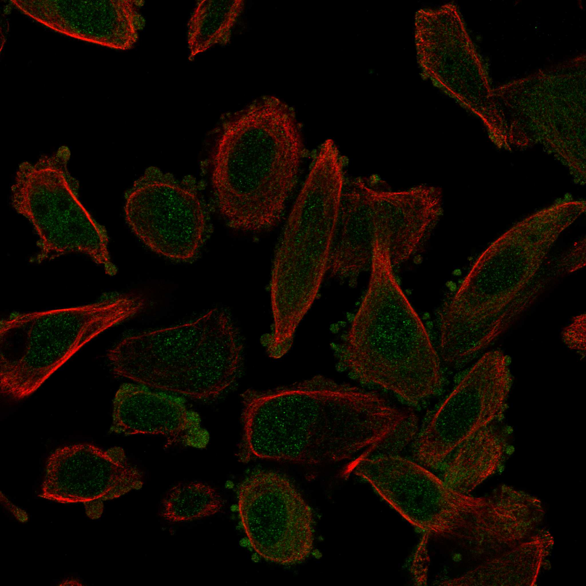
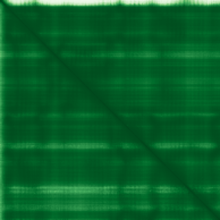

type: protein-evaluation gene: "SSU72" date: 2026-06-03 tags: [protein-scout, nuclear-protein, evaluation] status: scored ---
SSU72 核蛋白评估报告 (Full Re-evaluation)
1. 基本信息
| 项目 | 内容 |
|---|---|
| 基因名 / 别名 | SSU72 |
| 蛋白名称 | RNA polymerase II subunit A C-terminal domain phosphatase SSU72 |
| 蛋白大小 | 194 aa / 22.6 kDa |
| UniProt ID | Q9NP77 |
| 评估日期 | 2026-06-03 |
2. 评分总览
| 维度 | 得分 | 满分 | 加权后 | 关键证据摘要 |
|---|---|---|---|---|
| 核定位特异性 | 7/10 | ×4 | 28 | HPA: Nucleoplasm, Cytosol; UniProt: Nucleus; Cytoplasm |
| 蛋白大小 | 8/10 | ×1 | 8 | 194 aa / 22.6 kDa |
| 研究新颖性 | 4/10 | ×5 | 20 | PubMed strict=69 篇 (≤80→4) |
| 三维结构 | 9/10 | ×3 | 27 | AlphaFold v6 pLDDT=95.7; PDB: 3O2Q, 3O2S, 4H3H, 4H3K |
| 调控结构域 | 8/10 | ×2 | 16 | InterPro: IPR006811; Pfam: PF04722 |
| PPI 网络 | 3/10 | ×3 | 9 | STRING 15 partners; IntAct 15 interactions |
| 互证加分 | — | max +3 | 3.0 | PDB+AF+STRING+IntAct cross-validation |
| 原始总分 | 111.0/180 | |||
| 归一化总分 | 61.7/100 |
3. 详细分析
3.1 核定位证据
| 来源 | 定位 | 可信度 |
|---|---|---|
| Protein Atlas (IF) | Nucleoplasm, Cytosol | Approved |
| UniProt | Nucleus; Cytoplasm | Swiss-Prot/TrEMBL |
IF 图像获取: 未下载本地IF图像（standard evaluation），核定位证据基于HPA subcellular localization注释、UniProt注释和GO-CC术语。
GO Cellular Component:
- cytosol (GO:0005829)
- mRNA cleavage and polyadenylation specificity factor complex (GO:0005847)
- nucleoplasm (GO:0005654)
结论: 主要核定位，HPA 可靠性良好，有辅助数据源支持。
3.2 蛋白大小评估
评价: 大小基本合适，可用于常规实验。
3.3 研究现状
| 指标 | 数值 |
|---|---|
| PubMed strict count | 69 |
| PubMed broad count | 107 |
| 别名(未计入scoring) | 无 |
关键文献: 1. Indolent CD4+ CAR T-Cell Lymphoma after Cilta-cel CAR T-Cell Therapy.. *The New England journal of medicine*. PMID: 38865661 2. Mapping Nucleosome Resolution Chromosome Folding in Yeast by Micro-C.. *Cell*. PMID: 26119342 3. Ssu72: a versatile protein with functions in transcription and beyond.. *Frontiers in molecular biosciences*. PMID: 38304578 4. Ssu72 Dual-Specific Protein Phosphatase: From Gene to Diseases.. *International journal of molecular sciences*. PMID: 33917542 5. Phosphatase Ssu72 Is Essential for Homeostatic Balance Between CD4(+) T Cell Lineages.. *Immune network*. PMID: 37179750
评价: 已有一定研究基础，但仍存在niche空间。
3.4 三维结构分析
| 指标 | 数值 |
|---|---|
| AlphaFold 版本 | v6 |
| AlphaFold 平均 pLDDT | 95.7 |
| 高置信度残基 (pLDDT>90) 占比 | 93.3% |
| 置信残基 (pLDDT 70-90) 占比 | 4.6% |
| 中等置信 (pLDDT 50-70) 占比 | 1.0% |
| 低置信 (pLDDT<50) 占比 | 1.0% |
| 有序区域 (pLDDT>70) 占比 | 97.9% |
| 可用 PDB 条目 | 3O2Q, 3O2S, 4H3H, 4H3K |
PAE: PAE 图像未生成本地文件（standard evaluation），结构判断基于 AlphaFold pLDDT 统计。
评价: PDB实验结构（3O2Q, 3O2S, 4H3H, 4H3K）+ AlphaFold高质量预测（pLDDT=95.7），结构可信度高。
3.5 结构域分析
| 来源 | 结构域 |
|---|---|
| InterPro/Pfam | InterPro: IPR006811; Pfam: PF04722 |
染色质调控潜力分析: 多个已知结构域注释，AlphaFold预测质量高，结构域折叠可信。
3.6 PPI 网络
STRING 预测互作 (combined score >0.4):
| Partner | Combined Score | Experimental | 功能类别 |
|---|---|---|---|
| WDR82 | 0.998 | 0.517 | — |
| SYMPK | 0.998 | 0.978 | — |
| CPSF3 | 0.985 | 0.586 | — |
| PCF11 | 0.974 | 0.516 | — |
| GTF2B | 0.972 | 0.292 | — |
| WDR33 | 0.971 | 0.514 | — |
| CPSF2 | 0.965 | 0.585 | — |
| CSTF2 | 0.945 | 0.487 | — |
| POLR2A | 0.942 | 0.728 | — |
| CPSF1 | 0.925 | 0.586 | — |
实验验证互作 (IntAct):
| Partner | 方法 | PMID | ||
|---|---|---|---|---|
| EBI-122539 | psi-mi:"MI:0399"(two hybrid fragment pooling appro | pubmed:15710747 | imex:IM-16519 | |
| Dmel\CG11696 | psi-mi:"MI:0399"(two hybrid fragment pooling appro | pubmed:15710747 | imex:IM-16519 | |
| "l | psi-mi:"MI:0399"(two hybrid fragment pooling appro | pubmed:15710747 | imex:IM-16519 | |
| Dmel\CG11695 | psi-mi:"MI:0399"(two hybrid fragment pooling appro | pubmed:15710747 | imex:IM-16519 | |
| Sym | psi-mi:"MI:0399"(two hybrid fragment pooling appro | pubmed:15710747 | imex:IM-16519 | |
| prod | psi-mi:"MI:0399"(two hybrid fragment pooling appro | pubmed:15710747 | imex:IM-16519 | |
| Tango11 | psi-mi:"MI:0399"(two hybrid fragment pooling appro | pubmed:15710747 | imex:IM-16519 | |
| Dmel\CG12091 | psi-mi:"MI:0399"(two hybrid fragment pooling appro | pubmed:15710747 | imex:IM-16519 | |
| fiz | psi-mi:"MI:0399"(two hybrid fragment pooling appro | pubmed:15710747 | imex:IM-16519 | |
| Hsc70-4 | psi-mi:"MI:0399"(two hybrid fragment pooling appro | pubmed:15710747 | imex:IM-16519 |
PPI 互证分析:
- STRING + IntAct 均有数据
- STRING partners: 15，IntAct interactions: 15
- 调控相关比例: 0 / 15 = 0%
评价: STRING 15 个预测互作，IntAct 15 个实验互作。调控相关配体占比 0%。
3.7 多库互证
| 维度 | 来源 | 结果 | 是否一致 |
|---|---|---|---|
| 三维结构 | AlphaFold pLDDT=95.7 + PDB: 3O2Q, 3O2S, 4H3H, 4H3K | pLDDT=95.7, v6 | 预测+实验 |
| 定位 | UniProt + HPA | Nucleus; Cytoplasm / Nucleoplasm, Cytosol | 一致 |
| PPI | STRING + IntAct | 15 + 15 interactions | 数据充分 |
互证加分明细:
- PDB + AlphaFold 双源验证: +0.5
- 多库定位一致 (3源): +0.5
- STRING + IntAct 双源验证: +0.5
- 结构域 + AlphaFold 质量: +0.5
- PDB 多条目覆盖 (≥3): +1.0
总分: +3.0 / max +3
4. 总体评价
推荐等级: ⭐⭐⭐
核心优势: 1. SSU72 — RNA polymerase II subunit A C-terminal domain phosphatase SSU72，已有一定研究基础，但仍存在niche空间。 2. 蛋白大小194 aa，大小基本合适，可用于常规实验。
风险/不确定性: 1. PubMed 69 篇，已有一定研究基础 2. 结构数据质量可接受
下一步建议:
- [ ] 查阅最新关键文献补充研究背景
- [ ] 获取 Protein Atlas IF 图像确认亚细胞定位
- [ ] 设计体外实验验证核定位及潜在调控功能
5. 数据来源
- UniProt: https://www.uniprot.org/uniprotkb/Q9NP77
- Protein Atlas: https://www.proteinatlas.org/ENSG00000160075-SSU72/subcellular
- PubMed: https://pubmed.ncbi.nlm.nih.gov/?term=SSU72
- AlphaFold: https://alphafold.ebi.ac.uk/entry/Q9NP77
- STRING: https://string-db.org/network/9606.ENSP00000
- Data fetched live: 2026-06-03

